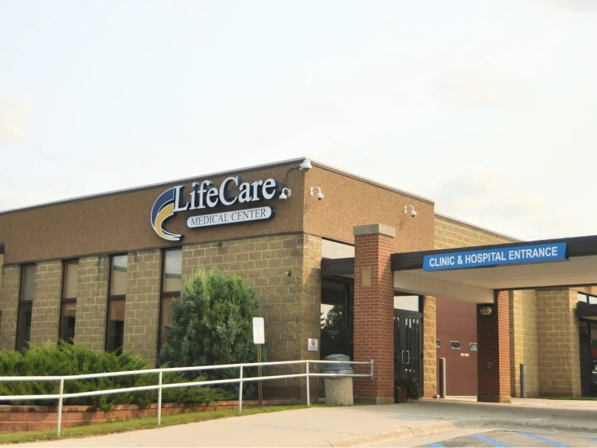

WELCOME TO LIFECARE CLINIC
Trusted medical consultation, experienced doctors and convenient appointment services for you and your family.
Register Now Book Appointment
Trusted Care, Better Health.
Specialized Doctors
Medical Specializations
Appointment Booking
WHY LIFECARE?
Consult qualified doctors across different medical specializations.
Request an appointment according to your preferred doctor and time.
We aim to provide a comfortable and organized clinic experience.
OUR SERVICES
General health consultation and routine care.
Healthcare consultation for children.
Women's health consultation and care.
Consultation for skin-related concerns.
Basic dental consultation and care.
NEED TO KNOW?
We provide General Medicine, Pediatrics, Gynecology, Dermatology and Dental Care.
Register as a patient and use the appointment form to request an appointment with a doctor.
You can view the available doctors and their consultation timings in the Our Doctors section.
Yes. You can select a doctor according to the specialization you need.
Please contact the clinic for appointment cancellation or rescheduling.
You can contact LifeCare Clinic by phone or email during clinic hours.
You may bring previous medical reports or prescriptions relevant to your consultation.
Book a consultation with one of our doctors.
Book AppointmentVISIT US
Monday - Saturday: 9:00 AM - 8:00 PM
Sunday: 10:00 AM - 2:00 PM
CARING FOR YOUR HEALTH
LifeCare Clinic is designed to provide convenient medical consultation in a comfortable clinic environment. Patients can choose a doctor, request appointments and receive appointment updates through the system.
Learn More